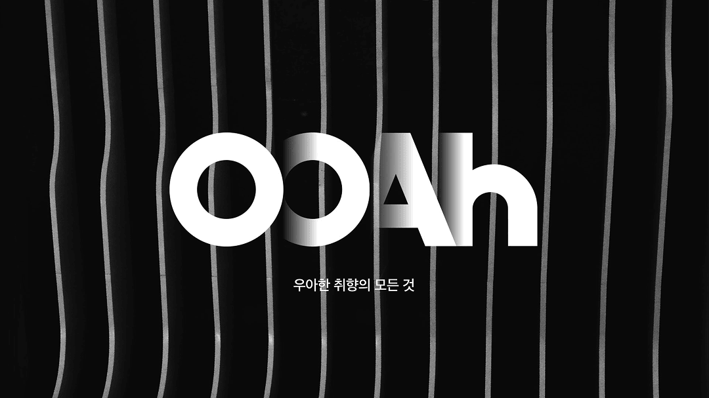
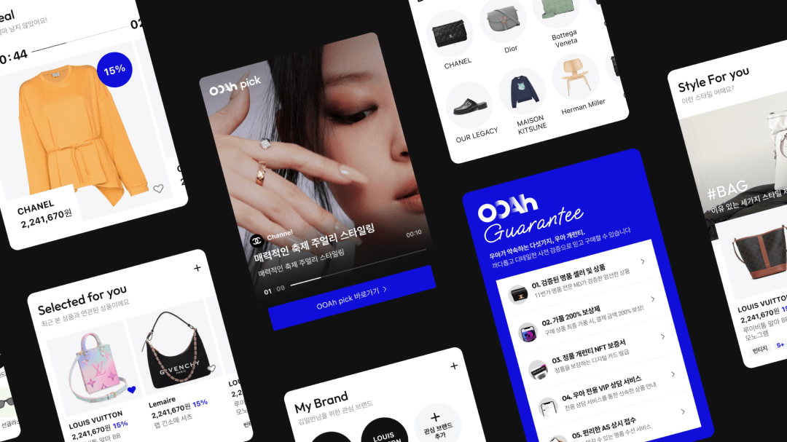
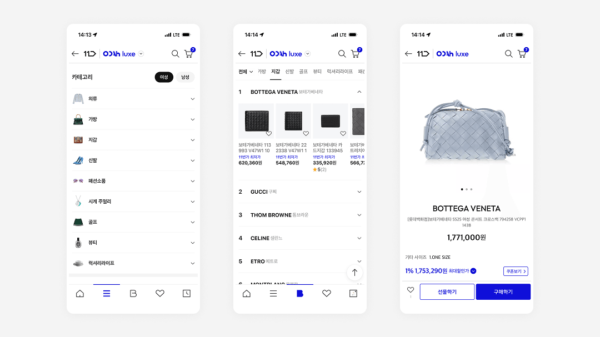

Design Intent — 명품은 제품 그 자체보다 그 안에 담긴 맥락과 분위기를 함께 소비하는 영역이에요. 그래서 단순히 기능을 빠르게 제공하는 구조가 아니라, 감각을 먼저 경험하게 하는 구조로 UX 전략을 재정의했어요. 사용자가 원하는 브랜드를 ‘찾는’ 과정이 아니라, 취향을 자연스럽게 ‘발견하는’ 흐름이 되도록 설계했어요. 화면 곳곳에서 신뢰를 형성하고, 정보는 절제된 방식으로 전달하며, 전체 경험은 몰입감 있게 이어지도록 설계한 것이 핵심이에요.

Visual Hierarchy — 메인 화면에서는 텍스트보다 이미지를 전면에 배치해 럭셔리 무드를 직관적으로 전달해요. 첫 인상에서 브랜드의 온도와 결이 느껴지도록 구성했어요. 넉넉한 여백과 정제된 타이포그래피는 시각적 밀도를 낮추면서도 고급스러운 긴장감을 유지해요. 정보는 한 번에 쏟아내지 않고, 시각적 위계를 따라 단계적으로 노출해 사용자가 자연스럽게 이해하도록 설계했어요. 화면이 설명하기보다, 분위기와 구성이 먼저 설득하도록 만드는 데 집중했어요.

Flow — 카테고리 진입부터 리스트, 상세 페이지, 구매 판단 단계까지의 흐름을 끊기지 않도록 연결했어요. 상위 맥락에서 브랜드의 방향성을 제시하고, 이후 핵심 정보와 비교 요소, 구매 결정에 필요한 데이터가 자연스럽게 이어지도록 구조화했어요. 사용자는 복잡한 탐색을 하고 있다는 느낌 없이, 하나의 스토리를 따라 이동하게 돼요. 스크롤은 단순한 물리적 이동이 아니라, 큐레이션된 콘텐츠를 따라가는 경험이 되도록 설계했어요.


Interaction System — 마이크로 인터랙션과 모션은 존재를 드러내기보다 경험을 부드럽게 연결하는 역할에 집중했어요. 과한 효과 대신 절제된 움직임으로 브랜드의 품격을 유지했어요. 로딩·빈 상태·전환 애니메이션까지 동일한 톤과 속도를 유지해 경험의 리듬이 깨지지 않도록 설계했어요. 사용자는 기능을 의식하지 않지만, 전체 경험은 매끄럽게 이어지도록 디테일을 정교하게 다듬었어요.